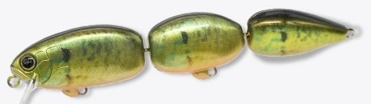
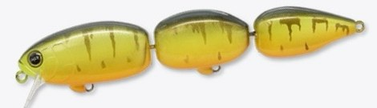
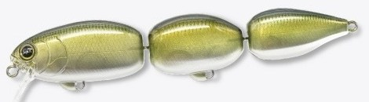
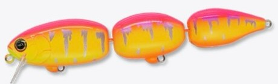

ムレン118
（MUREN 118）
ムレン118（群連）はREVONIK（レヴォニック）のチェーンベイトです。
ルアーデザイナー加藤誠司さんのブランドから、2026年10月下旬に登場した新作。見た目は小ぶりなジョイントスイムベイトですが、目指したのは“ひとつの群れ”。異なる3つのルアーがひとつの集団として動く、いわばハードルアー版のアラバマリグです。

画像出典:REVONIK公式Instagram
スペック
- メーカー
- REVONIK（レヴォニック）
- タイプ
- フローティング（チェーンベイト）
- 全長
- 118mm
- 自重
- 18.7gクラス
- 潜行深度
- 〜1.0m
- カラー
- 全8色
- ターゲット
- ブラックバス
- 価格
- 4,510円（税込）
- 発売
- 2026年10月下旬
▼今すぐチェック


ムレン118の特徴
3つのボディが連動する、時間差アクション
-
複数のボディが生む時間差アクション
リトリーブすると、各ボディがわずかに遅れて左右に動き、複雑なフラッシングと水押しを連続して生み出します。一体でヌルヌル泳ぐ従来のスイムベイトとは違い、小魚の群れのような動きを演出します。
-
止めても続く“余韻”アクション
リトリーブを止めた瞬間も動きが完全には止まらず、残った慣性でゆらゆらと揺れ続けます。「巻く」だけでなく「止めた後」のわずかな動きまで、バスにアピールできます。
-
ネジで外せるシングルジョイント
3つのボディが別々のルアーとして動けるよう、上下左右の可動域とボディの間隔にこだわったシングルジョイント。ジョイント部はネジで取り外せるので、ボディを減らしてショート化したり、足してロング化したりする改造もできます。
ムレン118の使い方
基本は一定速度のただ巻き。3つのボディが時間差で動き、群れのようなフラッシングを出します。
スピード変化やストップを組み合わせると、止めた瞬間の余韻アクションでバイトを誘えます。潜行深度は〜1.0mなので、シャローのカバー周りや岬、ブレイクの上を通すイメージで使いましょう。
ムレン118の得意な状況
ベイトフィッシュが群れているときや、ワカサギ・オイカワなどの小魚を追っているバスを狙うとき。アラバマリグのような群れのアピールを、ハードルアーで手軽に出したいときにも。
ワンポイント
ジョイントを外してボディの数を変えると、シルエットや動きの印象を変えられます。ベイトが小さいときはショート化、アピールを強めたいときはロング化と、状況に合わせたチューニングを楽しめるのもムレンならではです。
ほかのルアーとの使い分け
| ルアー | 全長／自重 | 使いどころ |
|---|---|---|
| ムレン118 | 118mm／18.7gクラス | 群れを1本で再現。巻きと止めの余韻で食わせたいときに |
| アラバマリグ | 仕掛けによる | 複数のワームで群れを再現。重く、扱いに慣れが必要 |
| ジョイントスイムベイト | さまざま | 1匹の魚をナチュラルに泳がせたいときに |
ムレン118は、アラバマリグの「群れ」のアピールと、ハードルアーの扱いやすさをいいとこ取りしたルアー。ハードルアーなので、キャストやリトリーブのしやすさはクランクベイトやスイムベイトに近い感覚です。
人気カラー
全8色（シャッド、ブルーギル、タイガー、クリアーハス、ゴーストBBメロン、ベイビーバス、クローフィッシュ、ピンクタイガー）から4色を紹介します。

ブルーギルブルーギルを模したリアルカラー。ギルが多いフィールドや、夏場のシャローに。

タイガーイエローにタイガー柄のアピールカラー。濁りが入った日や曇りの日に。

ゴーストBBメロン透け感のあるゴーストカラー。クリアウォーターや晴れた日に、ナチュラルに群れを見せたいときに。

ピンクタイガーピンクとオレンジにタイガー柄の派手なカラー。強い濁りや、とにかく目立たせたいときに。
画像出典:REVONIK公式Instagram
ムレン118に似ているルアー
-
 ダヴィンチ150
エレメンツ
詳細はこちら＞
ダヴィンチ150
エレメンツ
詳細はこちら＞
150mmのビッグベイト。もっと大きいシルエットで1匹の魚を見せたいときに。
-
 エッジバイブ120
エレメンツ
詳細はこちら＞
エッジバイブ120
エレメンツ
詳細はこちら＞
120mmのバイブレーション。もっと速く、深いレンジを巻きたいときに。
-
 クラッシュシティ インフィルトレイター
ラパラ
詳細はこちら＞
クラッシュシティ インフィルトレイター
ラパラ
詳細はこちら＞
スイムベイト系のワーム。ハードルアーに反応が薄いときの食わせに。